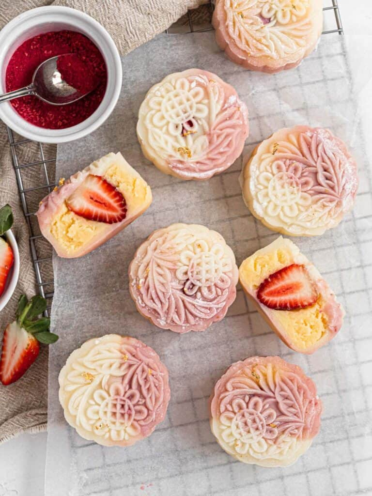

Snow Skin Mooncakes

Recipe & picture by the amazing Catherine Zhang
Soft and slightly chewy snow skin filled with creamy custard and a fresh tangy strawberry.
These no-bake strawberry snow skin mooncakes are perfect for this mid-autumn festival!
Ingredients
Snow Skin
- 40 g Glutinous rice flour
- 40 g Rice flour
- 20 g Corn starch
- 20 g White sugar
- 150 g Milk
- 20 g Vegetable oil
- 1 tbsp raspberry powder
Custard
- 45 g Milk powder
- 22 g Corn starch
- 50 g White sugar
- 100 g Milk
- 2 Eggs
- 40 g Unsalted butter
Assembly
- Glutinous rice flour, for dusting
- 5 Small strawberries
Steps
Custard
- Combine the milk powder, cornstarch, milk, eggs and sugar together in a bowl and whisk to combine
- Pour the custard base into a small saucepan over medium heat and whisk continuously until the mixture begins to thicken
- Using a rubber spatula continue to mix the custard until it thickens enough to form a ball
- Remove from the heat and add the butter
- Mix the custard until the butter is fully incorporated
- Wrap the custard in clingwrap and place it in the fridge to cool completely
- Meanwhile prepare the snowskin
Snow Skin
- Combine the rice flours, wheat/corn starch, white sugar and milk, whisk together until smooth
- Cover the mixture and steam for 20 minutes, or until the centre is fully set
- Remove from the heat and add the oil
- Roughly mix the mixture and allow it to cool completely
- Using your hands knead the dough until the oil is completely absorbed
- Remove one-third of the dough and knead in raspberry powder
- Divide the white dough and pink dough into 5 equal parts
- Combine the pink and white dough together to form 5 balls and set aside
Assembly
- Once the custard has cooled divide it into 5 equal portions (each should weight ~50g)
- Wrap a whole strawberry in each portion and form into a balls
- Lightly coat a ball of snowskin in glutinous rice flour and dust the mooncake mould (I used a 100g mould)
- Flatten the ball and roll it out with a rolling pin to form a circle
- Place a ball of custard in the centre and pull the sides of the snowskin in to enclose the custard
- Smoothen the surface of the dough and shape it into a mooncake using the dusted mould
- Repeat with the remaining custard and dough
- Refrigerate for 1-2 hours to set before serving